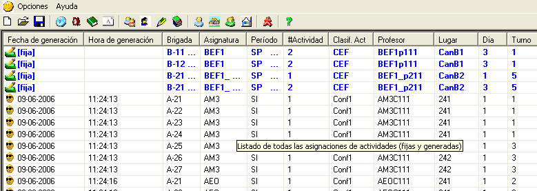
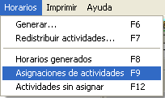
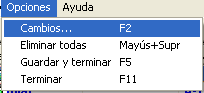
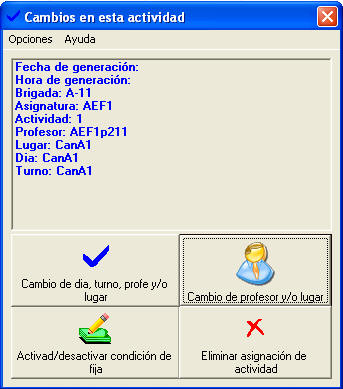
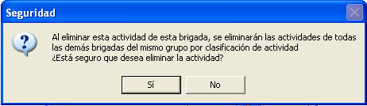
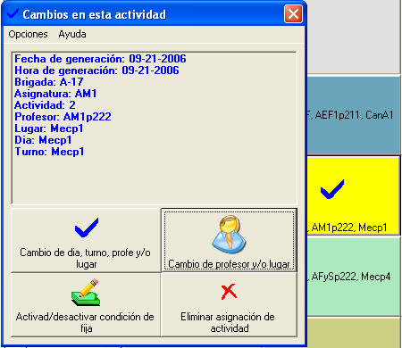

|
Asignaciones de actividades |
Cuando se fijan actividades o se generan horarios, se dice que las actividades han sido asignadas. Una actividad asignada consta de los siguientes datos:
Fecha y hora de generación
Brigada a la cual le fue a asignada
Asignatura
Período
Número de actividad en ese período (con su respectiva clasificación)
Profesor que impartirá la actividad
Lugar donde se realizará la actividad
Si es fija o no
Día y Turno

Nota: De este modo quedan restringidos la brigada, el profesor y el lugar. Cuando muestre las restricciones de uno de ellos aparecerán en casillas de colores, los turnos que están ocupados por una actividad. Estas no se pueden modificar si no es eliminando una asignación de actividad.
¿Cómo mostrar el listado de las asignaciones de actividades?

Seleccione la opción Asignaciones de actividades del menú Horarios o presione la tecla F9
Aparecerá el listado correspondiente
¿Cómo eliminar una asignación?

En el menú opciones de la ventana de Asignaciones, seleccione la opción Cambios o presione la tecla F2
Aparecerá la siguiente ventana

2. Haga click en Eliminar asignación de actividad

3. Haga click en Sí, para eliminar
Igualmente puede realizarle cambios a una actividad haciendo click sobre una de ellas en la Ventana de horarios:

.